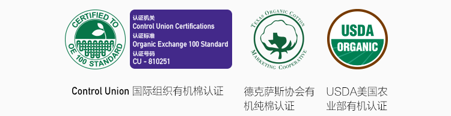
——世界上最权威、最严苛的有机棉认证
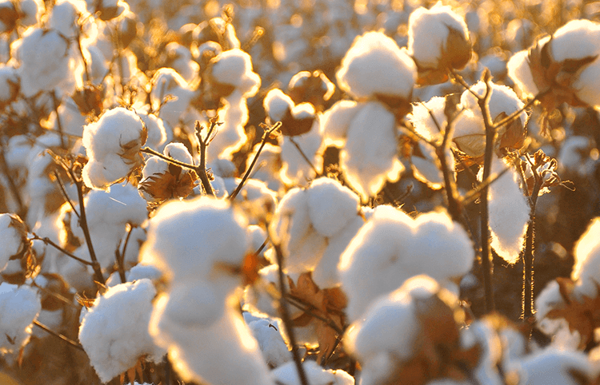
什么是USDA有机认证？
即美国农业部（United States Department of Agriculture） 有机认证，是全美最权威的农产品有机认证标准，更是世界公认最为严苛的认证标准之一，对农作物的种植、动物的饲养有着极为明确的规范细则。
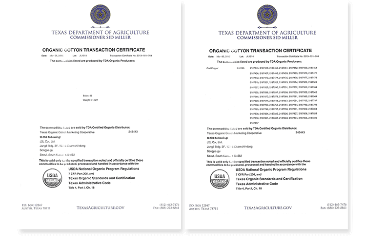
上面的两份文件是花煦从美国德克萨斯州进口有机棉原料的报货单。能够获得USDA认证的有机棉在种植加工过程中不使用添加剂，纯净度和舒适性远高于一般棉花，杜绝任何化学污染。
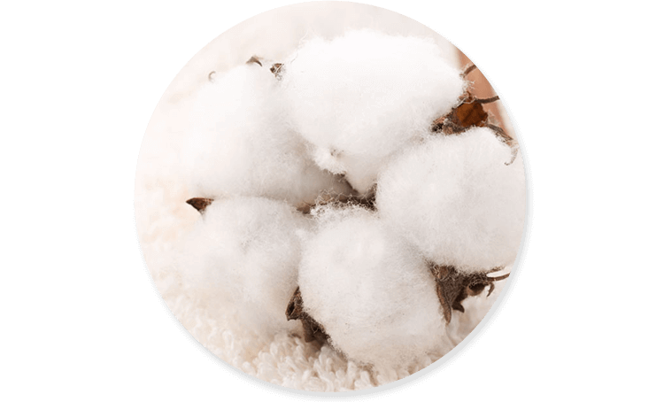
健康，舒适，轻柔纯净。我们选择最天然的有机棉，只为成为你的极致之选。
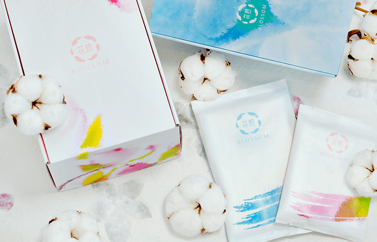
花煦致力于改善女性特殊时期的使用体验，我们提供的是一套呵护服务，而不仅仅是健康的卫生巾产品。这套服务包括：按片定制、按月配送和新鲜产品。
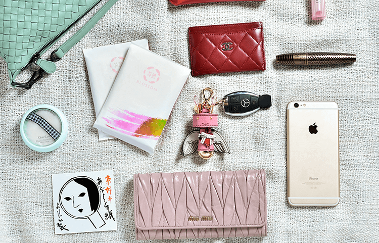
花煦摒弃了传统思维，提供“按片购买”服务。女性用户可以从现有不同面层、四种不同长度和两种薄度中逐片选择，真正做到“量身定制”。
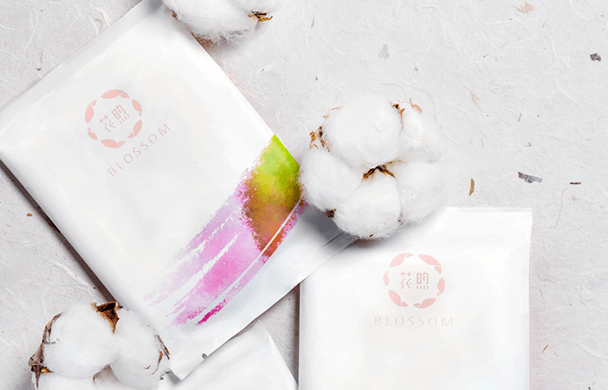
花煦还提供单月包、季度包和半年包的服务，用户可以预约未来每个月在指定日期（大约在经期前一周）进行配送服务。
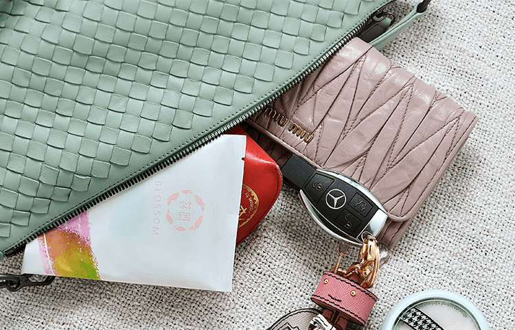
为保证新鲜度，花煦首创订单化生产，配合自有国际先进的卫生巾生产线，可根据需求调整生产，保证每一位用户手上的卫生巾都是30天内生产出来的，避免由库存带来的细菌侵害风险。
花煦采用的有机纯棉产自美国德克萨斯州，指定在韩国加工成水刺无纺布，并于国内完成卫生巾的最终成品生产。全球甄选，使原材料到无纺布再到卫生巾，每一步都完美呈现。
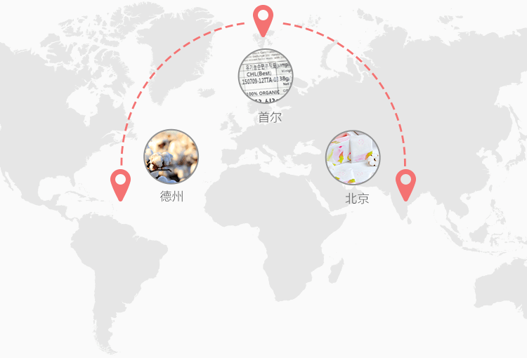
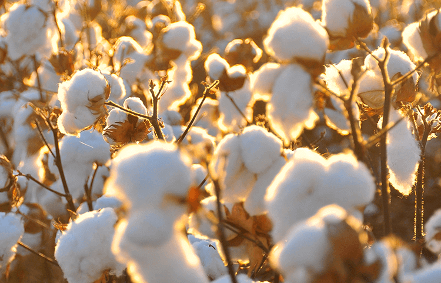
@德州：源自德州钻石棉产区的有机棉花，历经6项严苛质检和2次等级评定，赢得USDA Organic有机认证，穿越20,000公里太平洋飞往韩国。
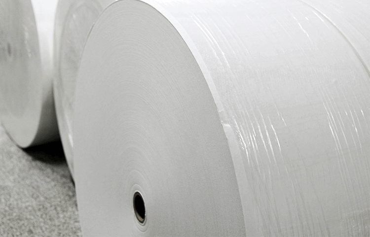
@韩国：经由J2LOH公司采用全球最好的水刺无纺布加工机（瑞士产）制成纯棉无纺布面层，制作全程不添加任何荧光剂及其它漂白制剂。一直保持着纯天然状态，飞往中国。
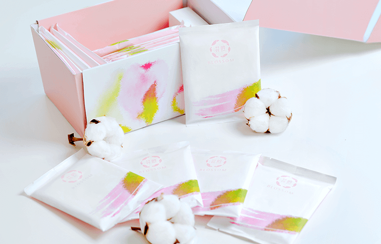
@中国：纯棉无纺布在国际一流全封闭式药用无菌生产线上，慢慢舒展开，变身成柔软、洁白的花煦有机卫生巾。
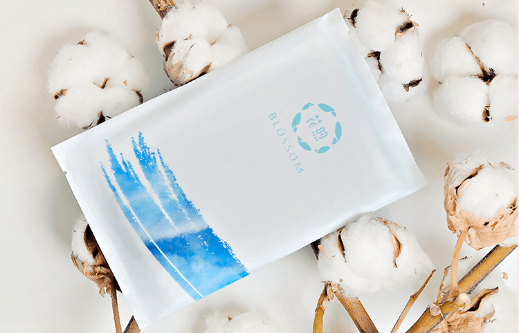
花煦卫生巾采用美国德克萨斯州海岸有机棉，荣膺美国农业部（USDA）有机认证和德克萨斯州有机棉合作协会（TOCMC）许可，是全世界公认最顶级的纯棉材料，被誉为棉中“爱马仕”。
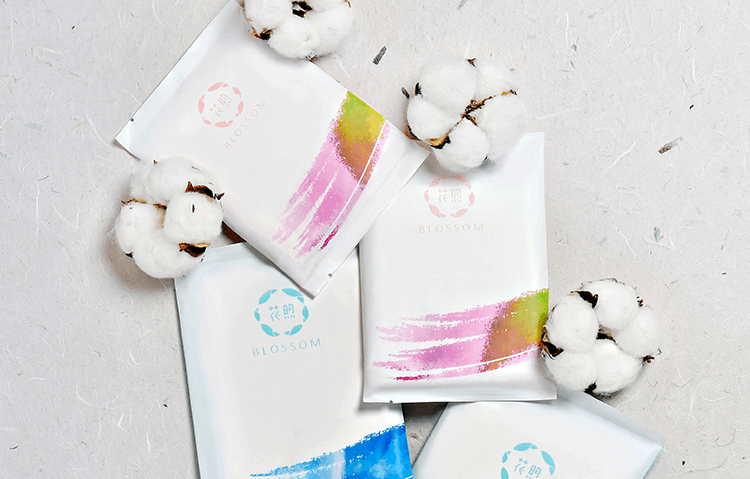
为什么选择有机棉？
有机棉（Organic Cotton），从播种到加工过程全天然无污染的棉花，100%的生态生长环境，纯天然、无污染、零致敏，触感柔软，透气极佳，让人仿佛置身自然。
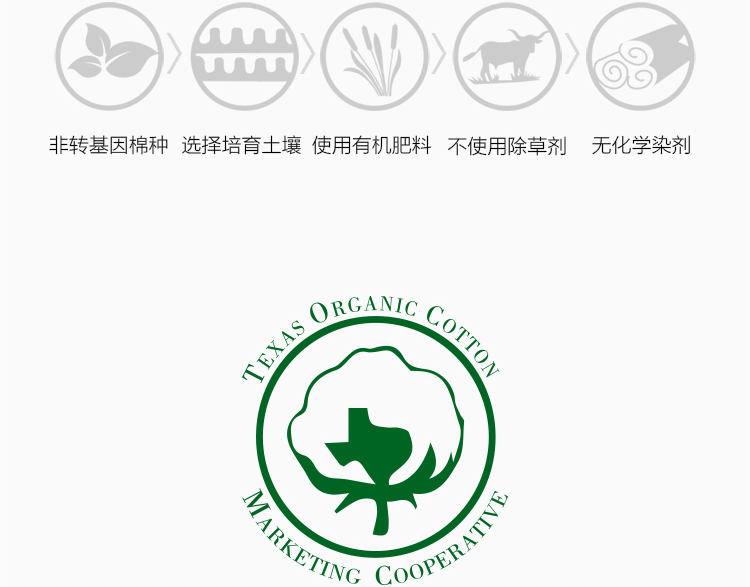
有机棉的生产对光、热、水、土有严苛限制，必须选在大气、水源、土壤未受到污染，周边200平方公里内无任何工厂或其他污染源的地区。因此，只有极少数有机棉可以通过USDA认证，而花煦采用的又是品质极为上乘的TOCMC许可有机棉。